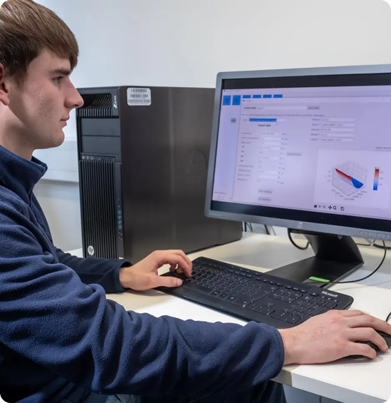

(001)
TriboDENS PHENIX™ is an advanced mechanical component and contact lubrication modelling. Bearings, gears and seals are examples of components. Elastohydrodynamic (EHL), hydrodynamic, boundary lubrication contacts can also be analysed.
